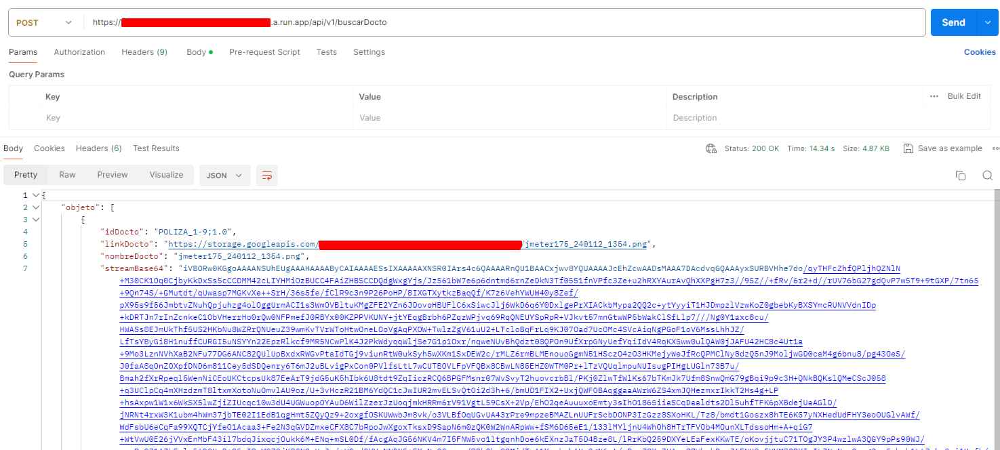

Santiago de Chile, Chile (june 2024 / current)
Python developer. I work as backend developer. I developed APIs, consumed APIs too.
I worked with microsoft Graph API.
I created scripts to load historical data to data base and MS one drive.
I have mount docker images and run containers.
Languages:
Python
Technologies:
SQL Server
Git
Tools:
Visual Studio Code
Postman
2022-2024 - GCP developer at Tigabytes
GCP developer
Santiago de Chile, Chile (oct 2022 / jan 2024)
Python developer, I have created API to replace Alfresco.
I have created API to deliver data to GUI in an app web.
I have developed script to apply some rules on Google Workspace accounts.
I have created virtual machines on compute engine to make testing, a lot of buckets.
I config CI/CD incorporated in Cloud Run.
Scripts on JupiterLab.
I deployed in kubernetes.
I created apps deployed in cloud run using docker.
Languages:
Python (from 3.7 to 3.9)
Apps Script
PHP
Cloud Technologies:
Cloud Run
Cloud Functions
Cloud Storage
App Engine
Firestore
Kubertenes
Compute Engine
Looker studio
Cloud Repository
Git
Tools:
Visual Studio Code
Postman
jmeter
GCP Cloud SDK shell
Gestor API Documentos

2021-2022 - BI Engineer at Sodimac
BI Engineer.
Santiago de Chile, Chile (may 2021 / sep 2022)
Python backend developer, microservices, API. GCP: BigQuery, Spanner, Cloud Functions, Cloud Run, and others GCP components.
CRM Salesforce: ampscript, journeys, cloudpages, automations.
2021-2021 - Developer at Kibernum
Developer
Santiago de Chile, Chile (mar 2021 - abr 2021) Desarrollador Senior.
Agile methodologies used Scrum and Kanban, I develop applications with the following technologies:
C#, SQL-Server, Visual Studio 2015 y 2019.
jQuery.
TFVS.
GIT.
ETL (SSIS).
Mobile applications with Xamarin.
Used MVC application architecture.
2018-2021 - Developer at Softmaker
Developer
Santiago de Chile, Chile (nov 2018 / mar 2021)
Developer of web applications, web services and windows services.
Production support. Technologies: C#, Visual Studio 2010, 2017 and
2019. SQL Server. jQuery. WCF. MVC. Banking sector: Santander. BCI.
Itau, and others.
Banking Sector.
2017-2018 - Web developer at Kibernum
Developer
Santiago de Chile, Chile (dec 2017 / aug 2018)
I worked as web developer using IDE Visual Studio 2015.
Technologies:
C#
SQL Server
DevOps with BMC Release Lifecycle Management on Citibank
Banking Sector.
2015-2017 - Developer at Softmaker
Developer
Santiago de Chile, Chile (mar 2015 / dec 2017)
I worked in this same company during the period included: nov 2018 / mar 2021, the activities are mentioned above.
2013-2015 - Developer at IBM
Developer
Caracas, Venezuela (oct 2013 / mar 2015)
Web developer .Net 3.5 with C#, SQL server 2012. Developer and support in architecture area. Production support.
Client: Banesco bank.
2011-2013 - Developer at Soluciones Tecnológicas Informáticas
Developer
Caracas, Venezuela (dec 2011 / jun 2013).
Applications developer with Power builder and Oracle. Venezuela Central bank (BCV).
2008-2011 - Developer at Amagi Services
Developer
Mérida, Venezuela (may 2008 / sep 2011).
Applications developer. Agile methodologies, different technologies
such as .Net, T-SQL, PL-SQL y Power Builder.
Banking Sector.